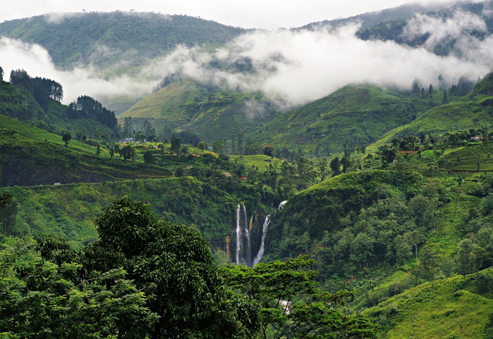
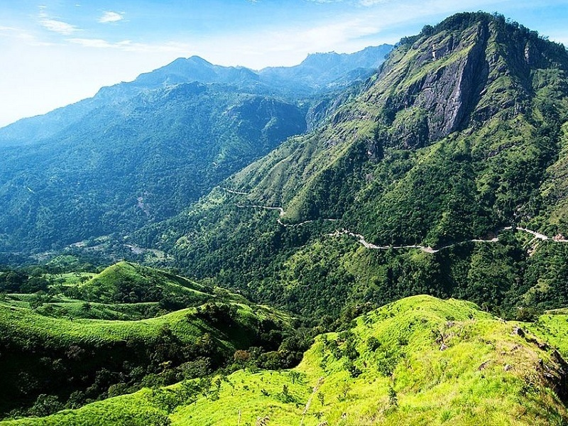
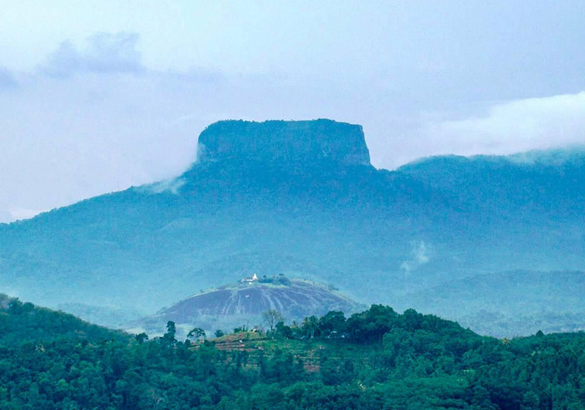
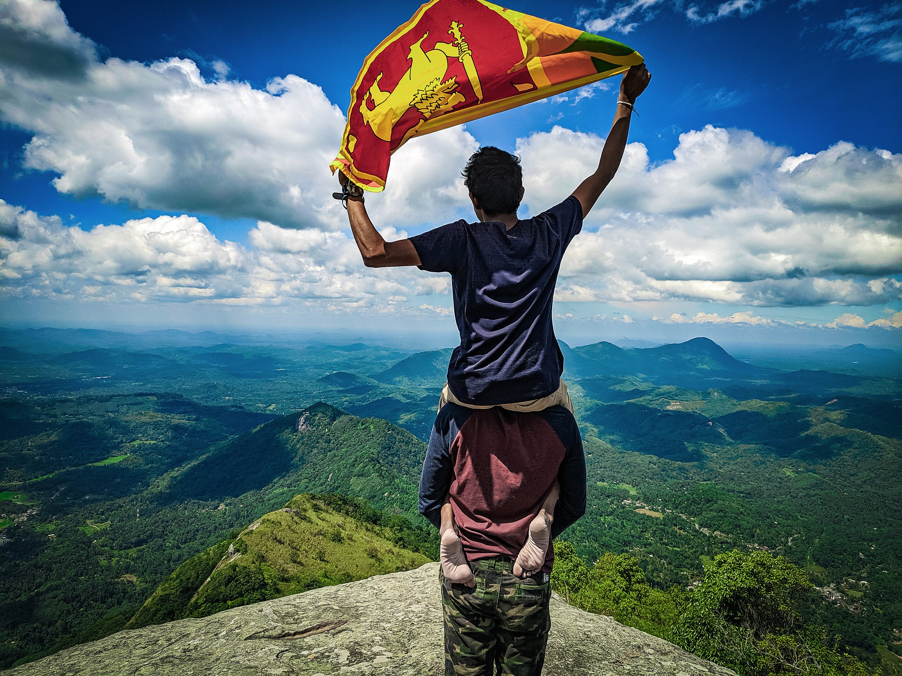
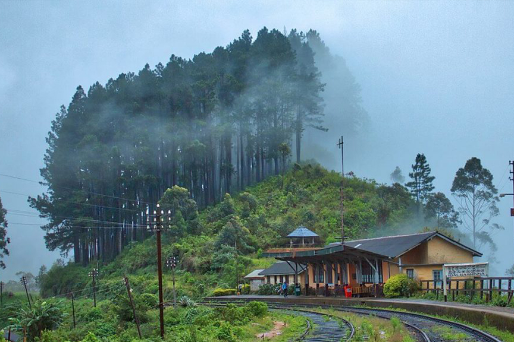
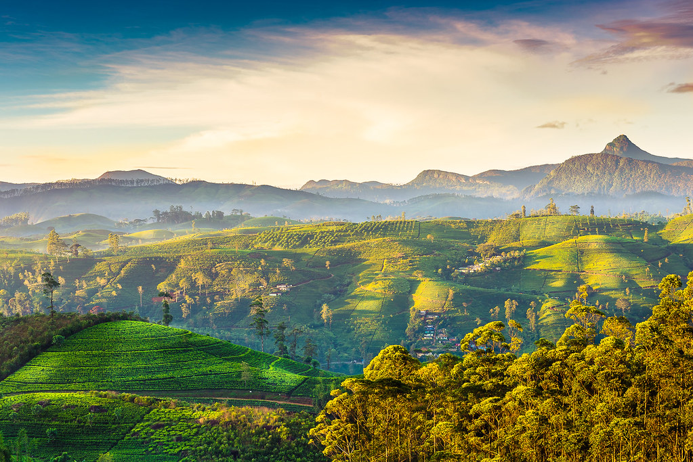
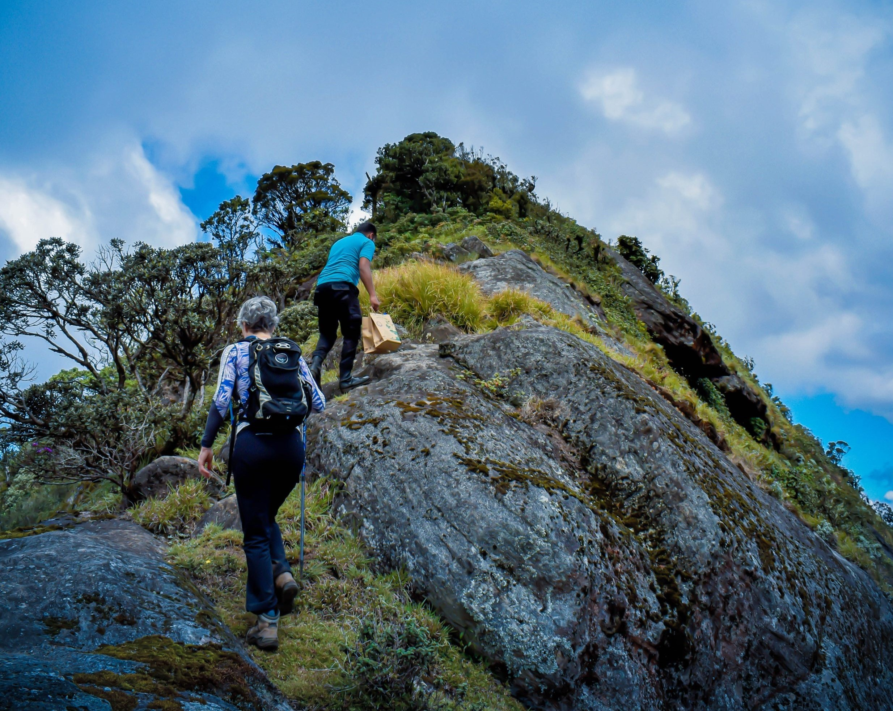

MOUNTAINS
Sri Lanka, an island nation in the Indian Ocean, is famous for its enchanting mountain ranges, especially in the central highlands. These mist-clad mountains offer a stunning contrast to the tropical beaches surrounding the island, presenting cool, lush, and green landscapes that attract both locals and tourists. The region is dotted with rolling hills covered in tea plantations, waterfalls, and verdant forests. The most famous of these mountain areas is the Knuckles Mountain Range, which gets its name from the resemblance of its peaks to a set of knuckles. With diverse ecosystems and a high degree of biodiversity, this range is home to many endemic plant and animal species, as well as ancient forests and indigenous settlements. The UNESCO World Heritage-listed Central Highlands, which include the Knuckles Range, Horton Plains, and the Peak Wilderness, represent a major portion of the island's natural beauty.
In addition to Knuckles, the Adam’s Peak, also known as Sri Pada, is a sacred mountain revered by multiple religions in Sri Lanka. At 2,243 meters high, it is not the tallest mountain in Sri Lanka, but it holds significant cultural and spiritual value. Pilgrims from around the country climb its steep, rugged path to witness the spectacular sunrise from the summit, where a distinct "shadow of the peak" effect is visible. This mountain is believed to have a sacred footprint on its summit, attributed to Buddha in Buddhism, Shiva in Hinduism, and Adam or St. Thomas in Christian and Islamic traditions. The breathtaking views from these mountains, combined with their historical and cultural significance, make Sri Lanka's mountainous regions a truly unique experience, blending natural wonders with rich heritage.
POPULAR MOUNTAINS

Horton Plains and World’s End

Pidurutalagala (Mount Pedro)

Little Adam’s Peak

Bible Rock (Bathalegala)

Alagalla (Potato Mountain)

Pattipola

Knuckles Mountain Range

Hatton
